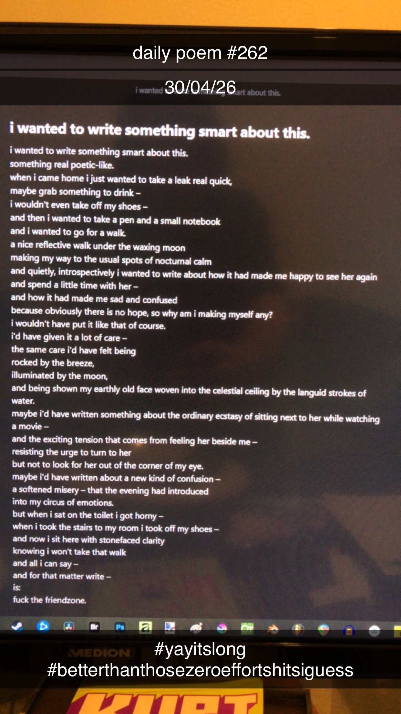

i wanted to write something smart about this.
[262]i wanted to write something smart about this.
something real poetic-like.
when i came home i just wanted to take a leak real quick,
maybe grab something to drink –
i wouldn't even take off my shoes –
and then i wanted to take a pen and a small notebook
and i wanted to go for a walk.
a nice reflective walk under the waxing moon
making my way to the usual spots of nocturnal calm
and quietly, introspectively, i wanted to write about how it had made me happy to see her again and spend a little time with her –
and how it had made me sad and confused,
because obviously there is no hope, so why am i making myself any?
i wouldn't have put it like that, of course.
i'd have given it a lot of care –
the same care i'd have felt being
rocked by the breeze,
illuminated by the moon,
and being shown my earthly old face woven into the celestial ceiling by the languid strokes of water.
maybe i'd have written something about the ordinary ecstasy of sitting next to her while watching a movie –
and the exciting tension that comes from feeling her beside me –
resisting the urge to turn to her,
but not to look for her out of the corner of my eye.
maybe i'd have written about a new kind of confusion –
a softened misery – that the evening had introduced
into my circus of emotions.
but when i sat on the toilet i got horny –
when i took the stairs to my room i took off my shoes –
and now i sit here with stonefaced clarity
knowing i won't take that walk
and all i can say –
and for that matter write –
is:
fuck the friendzone.
